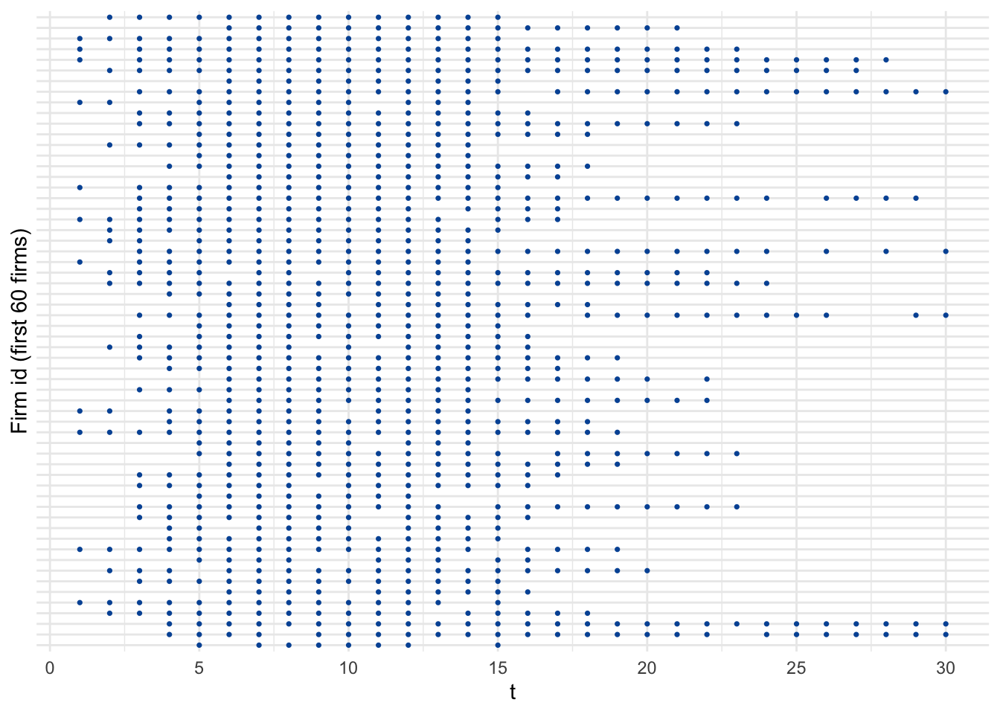
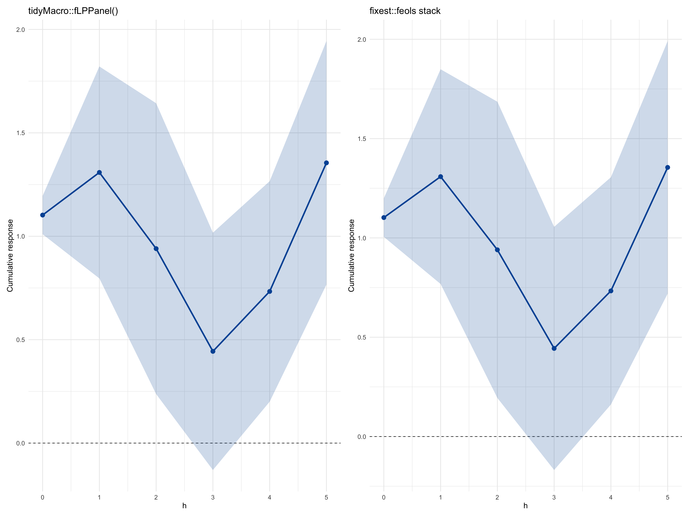
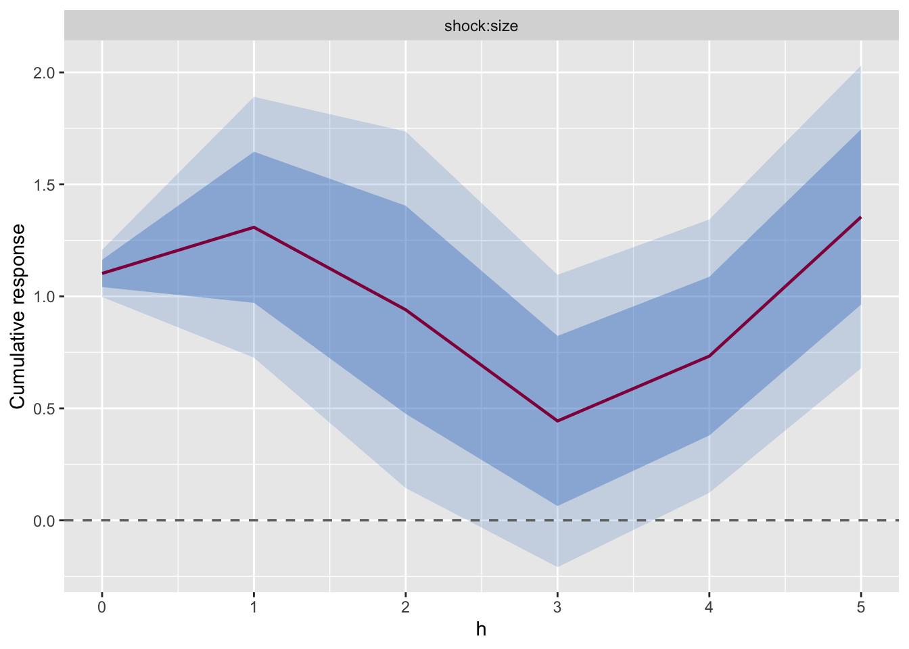

library(tidyverse)
library(patchwork)
library(tidyMacro)10 Panel Local Projections
Micro Responses to Macro Shocks — Almuzara & Sancibrián (2024)
10.1 Overview
This chapter demonstrates fLPPanel() — tidyMacro’s panel local-projection estimator, a C++/OpenMP port of panel_LP.m from Almuzara and Sancibrián (2024).
The estimated panel local projection is
\[y_{i,t+h} = \alpha^{(h)}_{\mathrm{FE}} + \beta_h\, (s_{it}\, x_t) + \gamma_h' w_{it} + \sum_{k=1}^{\min(h,\, p_{\max})} \delta_{hk}'\, v_{i,t-k} + u_{i,t+h},\]
where \(x_t\) is the aggregate shock, \(s_{it}\) an optional unit-level covariate scaling the response, \(w_{it}\) additional controls, and \(v_{i,t-k}\) lags of the regressand and shock regressor. Inference is time-clustered:
\[\hat{V}_h = (X'X)^{-1} \Big( \sum_t Z_t Z_t' \Big) (X'X)^{-1}, \qquad Z_t = \sum_i X_{it}\, \hat{u}_{it},\]
with normal critical values by default, or \(t\) critical values with the Imbens and Kolesár (2016) data-determined degrees of freedom under small_sample = TRUE. cumulative = TRUE projects \(\sum_{r=0}^{h} y_{i,t+r}\).
Like fLP(), the syntax is fixest-style and what-you-see-is-what-you-estimate:
- Formula
y ~ shock + controls | fe1 + fe2— fixed effects go after|. - Panel structure via
panel_id = c("id_col", "time_col"). - Macro expansion
..varsfor character-vector variable lists. - Panel-aware
l()/f()operators (lags/leads never cross unit boundaries). - Multi-band bands from a single fit via
conf = c(0.68, 0.95). - Plot with
fPlotLP().
Under the hood, the engine handles:
- High-dimensional fixed effects via alternating group-mean demeaning.
- Unbalanced panels — per-unit hash-lookup shifts, per-horizon
keepmasks (gaps are preserved, never silently closed). - Cumulative or standard responses.
- Two SE regimes: asymptotic time-clustered (LAHR) or the Imbens and Kolesár (2016) small-sample refinement with component-specific effective degrees of freedom.
Below we replicate the workflow of Almuzara and Sancibrián (2024) on a synthetic unbalanced sample panel, in a single fLPPanel() call, and check numerical agreement against the authors’ reference R port.
10.2 Setup
10.3 A sample unbalanced panel
Note
The Almuzara and Sancibrián (2024) application uses proprietary firm-level Compustat/CRSP micro data. What follows is a synthetic sample panel built to have the same structure — a common macro shock, a cross-sectional characteristic that scales the response, unit and time fixed effects, and realistic missingness so that anyone can reproduce the workflow end-to-end.
set.seed(1918)
T_dim <- 30
N <- 1000
# Common macro shock, unit-specific characteristic, true β = 1 on s·X.
macro <- rnorm(T_dim)
firm <- 1 + rnorm(N)
df_bal <- data.frame(
unit = rep(1:N, times = T_dim),
tt = rep(1:T_dim, each = N),
shock = rep(macro, each = N),
size = rep(firm, times = T_dim)
) |>
mutate(
y = size * shock +
as.vector(outer(0.5 * firm + rnorm(N), rnorm(T_dim))) +
rnorm(n())
)
# Realistic unbalancedness: (a) staggered entry, (b) random attrition,
# (c) sprinkled item-level NAs on the response.
set.seed(2025)
entry <- sample.int(6, N, replace = TRUE) # entry at t ∈ 1..6
exit <- pmin(T_dim, 14 + rgeom(N, prob = 0.15)) # exit at t ≥ 15
sparsity_mask <- runif(nrow(df_bal)) > 0.05 # drop 5% of surviving cells
df_panel <- df_bal |>
dplyr::filter(tt >= entry[unit], tt <= exit[unit]) |>
dplyr::filter(sparsity_mask[row_number()])Coverage pattern for the first 60 firms:
df_panel |>
filter(unit <= 60) |>
ggplot(aes(x = tt, y = factor(unit))) +
geom_point(size = 0.6, colour = "#0055A4") +
scale_x_continuous(breaks = seq(0, T_dim, 5)) +
labs(x = "t", y = "Firm id (first 60 firms)") +
theme_minimal(base_size = 11) +
theme(axis.text.y = element_blank())
10.4 Estimation — one fLPPanel() call
The formula says exactly what the estimator does. shock:size is the elementwise product \(s_{it}\,X_t\) that generates cross-sectional variation (necessary once the unit-invariant shock is absorbed into tt fixed effects). Two-way FE go after |.
lp_pkg <- fLPPanel(
y ~ shock:size | unit + tt,
data = df_panel,
panel_id = c("unit", "tt"), # id + time in a single argument
shock = "shock:size", # term label whose IRF we want
horizons = 5,
conf = c(0.68, 0.90), # two bands from a single fit
small_sample = TRUE, # Imbens–Kolesar (2016) refinement
cumulative = TRUE, # sum_{k=0..h} y_{i,t+k}
n_threads = 2 # OpenMP over horizons
)Tidy output:
tidyMacro:::tidy.fLPPanel(lp_pkg) |>
mutate(across(where(is.numeric), \(x) round(x, 4)))
#> horizon shock estimate se df pval lower_0.90 upper_0.90
#> 1 0 shock:size 1.1025 0.0584 10.7029 0.0000 0.9973 1.2077
#> 2 1 shock:size 1.3086 0.3235 10.7491 0.0020 0.7263 1.8908
#> 3 2 shock:size 0.9401 0.4491 12.8419 0.0568 0.1440 1.7361
#> 4 3 shock:size 0.4436 0.3659 11.8874 0.2489 -0.2090 1.0962
#> 5 4 shock:size 0.7333 0.3406 11.3205 0.0537 0.1233 1.3433
#> 6 5 shock:size 1.3550 0.3750 10.5620 0.0043 0.6789 2.0310
#> lower_0.68 upper_0.68
#> 1 1.0416 1.1634
#> 2 0.9712 1.6459
#> 3 0.4755 1.4046
#> 4 0.0639 0.8233
#> 5 0.3791 1.0875
#> 6 0.9636 1.746310.5 Side-by-side check against fixest
fixest doesn’t ship a dedicated panel-LP function, but a cumulative panel LP is definitionally a stack of feols fits — one per horizon, with the leaded / cumulated regressand on the LHS and the same shock and fixed-effects on the RHS. We build that stack manually and compare it against fLPPanel() on the same unbalanced sample.
For an apples-to-apples comparison we fit fLPPanel() again with small_sample = FALSE so both estimators use asymptotic time-clustered (LAHR) standard errors.
library(fixest)
# Panel-aware cumulative-lead. IMPORTANT: `dplyr::lead(y, k)` shifts by
# ROW INDEX, so it silently closes internal time gaps in an unbalanced
# panel. To shift by actual TIME we first `complete()` the (unit, tt)
# grid — missing cells become NA — then `dplyr::lead` steps along real
# time, matching fLPPanel's per-unit hash-lookup shift.
df_grid <- df_panel |>
tidyr::complete(unit, tt) |>
dplyr::arrange(unit, tt)
lead_cumsum <- function(y, h) {
s <- y # h = 0 → y itself
if (h > 0) for (k in 1:h) s <- s + dplyr::lead(y, k)
s
}
H <- 5
fixest_tbl <- purrr::map_dfr(0:H, function(h) {
df_h <- df_grid |>
dplyr::group_by(unit) |>
dplyr::mutate(y_h = lead_cumsum(y, h)) |>
dplyr::ungroup() |>
tidyr::drop_na(y_h, shock, size) # drop grid cells that were empty
fit <- fixest::feols(y_h ~ shock:size | unit + tt,
data = df_h,
cluster = ~tt, # time-clustered LAHR SE
notes = FALSE)
tibble::tibble(
h = h,
estimate = coef(fit)[["shock:size"]],
se = fit$se[["shock:size"]]
)
}) |>
dplyr::mutate(
lo90 = estimate - stats::qnorm(0.95) * se,
hi90 = estimate + stats::qnorm(0.95) * se
)# Refit with asymptotic time-clustered SE for the fixest comparison.
lp_pkg_asy <- fLPPanel(
y ~ shock:size | unit + tt,
data = df_panel,
panel_id = c("unit", "tt"),
shock = "shock:size",
horizons = H,
conf = 0.90,
small_sample = FALSE, # asymptotic LAHR to match fixest
cumulative = TRUE,
n_threads = 2
)Point estimates coincide to machine precision — both fits solve the same OLS system on the same effective sample. Standard errors agree up to fixest’s finite-sample cluster multiplier \(G/(G-1)\cdot(N-1)/(N-k)\), which fLPPanel does not apply in its asymptotic LAHR mode:
cat(sprintf(
"max |estimate diff| = %.3e\nmax |SE diff| = %.3e (fixest cluster small-sample multiplier)\n",
max(abs(as.vector(lp_pkg_asy$irfs) - fixest_tbl$estimate)),
max(abs(as.vector(lp_pkg_asy$irfs_se) - fixest_tbl$se))
))
#> max |estimate diff| = 4.885e-15
#> max |SE diff| = 2.882e-02 (fixest cluster small-sample multiplier)horizons <- 0:H
blue <- "#0055A4"
mk_panel <- function(est, lo, hi, title) {
ggplot(data.frame(h = horizons, est = est, lo = lo, hi = hi), aes(x = h)) +
geom_hline(yintercept = 0, linetype = "dashed", linewidth = 0.4) +
geom_ribbon(aes(ymin = lo, ymax = hi), fill = blue, alpha = 0.2) +
geom_line(aes(y = est), colour = blue, linewidth = 1.2) +
geom_point(aes(y = est), colour = blue, size = 3) +
scale_x_continuous(breaks = horizons) +
labs(title = title, x = "h", y = "Cumulative response") +
theme_minimal(base_size = 13)
}
p_pkg <- mk_panel(as.vector(lp_pkg_asy$irfs),
as.vector(lp_pkg_asy$irfs_lower),
as.vector(lp_pkg_asy$irfs_upper),
"tidyMacro::fLPPanel()")
p_fx <- mk_panel(fixest_tbl$estimate,
fixest_tbl$lo90,
fixest_tbl$hi90,
"fixest::feols stack")
p_pkg + p_fx + plot_layout(ncol = 2)
TipWhat
fLPPanel() adds over a raw fixest stack
- One call instead of one per horizon.
- Panel-aware
l()/f()operators that respect unit boundaries. - OpenMP-parallel horizon loop (each horizon is independent once y is leaded).
- Optional Imbens and Kolesár (2016) small-sample refinement with component-specific effective degrees of freedom (set
small_sample = TRUE; not infixest). - Multi-band CIs from a single fit (
conf = c(0.68, 0.95)).
10.6 Two-band plot via fPlotLP()
The result object has class c("fLPPanel", "fLP") so every fLP helper transfers:
fPlotLP(lp_pkg) +
ggplot2::labs(x = "h", y = "Cumulative response")
10.7 Other supported specifications
No interaction, one-way FE. Bare shock term, unit FE only:
set.seed(42)
df_alt <- df_panel |>
mutate(shock_i = shock + 0.3 * rnorm(n()), # firm-varying shock
X1 = rnorm(n()))
df_alt$y_alt <- 1.0 * df_alt$shock_i + 0.3 * df_alt$X1 + rnorm(nrow(df_alt))
fLPPanel(
y_alt ~ X1 + shock_i | unit,
data = df_alt,
panel_id = c("unit", "tt"),
shock = "shock_i",
horizons = 4, n_threads = 2
)
#>
#> Panel Local Projections (fLPPanel)
#> ---------------------------------------------
#> Original formula : y_alt ~ X1 + shock_i | unit
#> Panel index : id = unit, time = tt
#> Shock term(s) : shock_i
#> Response : y_alt
#> Fixed effects : unit
#> Horizons : 0 to 4
#> Cumulative : FALSE
#> SE : asymptotic time-clustered (LAHR)
#> Confidence : 90%
#> Observations : 16021
#> Lag order p_max : 0
#>
#> IRF (shock = 'shock_i'):
#> shock_i
#> 0 1.0084
#> 1 0.0832
#> 2 -0.3391
#> 3 -0.4072
#> 4 0.2898No fixed effects. Omit the | entirely — becomes pooled OLS with time-clustered SEs:
fLPPanel(
y_alt ~ X1 + shock_i,
data = df_alt,
panel_id = c("unit", "tt"),
shock = "shock_i",
horizons = 4, n_threads = 2
)
#>
#> Panel Local Projections (fLPPanel)
#> ---------------------------------------------
#> Original formula : y_alt ~ X1 + shock_i
#> Panel index : id = unit, time = tt
#> Shock term(s) : shock_i
#> Response : y_alt
#> Fixed effects : (none)
#> Horizons : 0 to 4
#> Cumulative : FALSE
#> SE : asymptotic time-clustered (LAHR)
#> Confidence : 90%
#> Observations : 16021
#> Lag order p_max : 0
#>
#> IRF (shock = 'shock_i'):
#> shock_i
#> 0 1.0098
#> 1 0.1900
#> 2 -0.1749
#> 3 -0.2208
#> 4 0.4028Panel-aware lags with macros. l() / f() respect unit boundaries; macros expand inside them:
controls <- c("shock")
fLPPanel(
y ~ shock:size + l(..controls, 1:2) + l(y, 1:2) | unit + tt,
data = df_panel,
panel_id = c("unit", "tt"),
shock = "shock:size",
horizons = 5, conf = 0.90, n_threads = 2
)
#>
#> Panel Local Projections (fLPPanel)
#> ---------------------------------------------
#> Original formula : y ~ shock:size + l(..controls, 1:2) + l(y, 1:2) | unit + tt
#> Panel index : id = unit, time = tt
#> Shock term(s) : shock:size
#> Response : y
#> Fixed effects : unit + tt
#> Horizons : 0 to 5
#> Cumulative : FALSE
#> SE : asymptotic time-clustered (LAHR)
#> Confidence : 90%
#> Observations : 14021
#> Lag order p_max : 0
#>
#> IRF (shock = 'shock:size'):
#> shock:size
#> 0 -6.167115e+11
#> 1 -6.171752e+11
#> 2 -5.722120e+11
#> 3 4.219612e+11
#> 4 2.501968e+12
#> 5 -1.623001e+13References
Almuzara, Martı́n, and Vı́ctor Sancibrián. 2024. “Micro Responses to Macro Shocks.” FRB of New York Staff Report, no. 1090.
Imbens, Guido W., and Michal Kolesár. 2016. “Robust Standard Errors in Small Samples: Some Practical Advice.” The Review of Economics and Statistics 98 (4): 701–12. https://doi.org/10.1162/REST_a_00552.